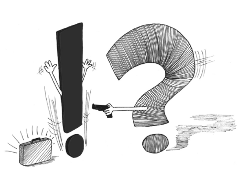
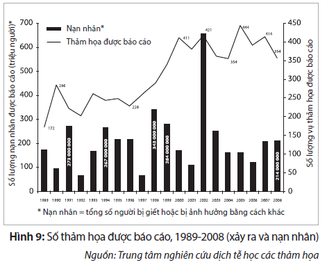
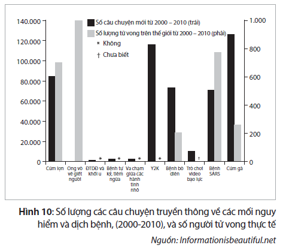
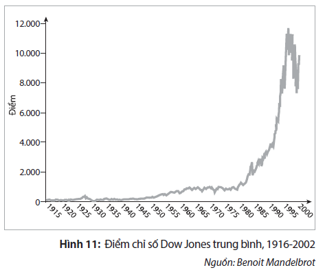
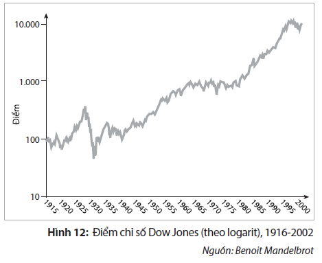
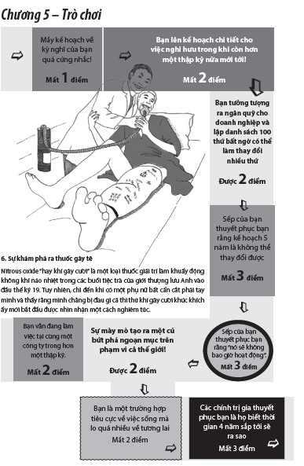

5. Mặt Tiêu Cực

“Bạn có thể dự đoán sai mọi điều trong toàn bộ cuộc đời mình và vẫn nghĩ rằng bạn có thể dự đoán đúng vào lần tới”
Nassim Nicholas Taleb
 Máy đọc giấc mơ
Máy đọc giấc mơ
Vào mùa hè năm 2008, một buổi sáng, tôi tham dự buổi hội thảo tại Stockholm được tổ chức bởi một nhà tương lai học người Mỹ. Chủ đề là “Điều gì nằm ở phía trước”, và lời mời đã hứa hẹn cung cấp “những cái nhìn thấu suốt vào thế giới chưa biết của ngày mai”. Nhà tương lai học là một người đàn ông Mỹ điển hình tuổi trung niên, trông giống Tiến sĩ tâm lý học nổi tiếng Phil đến mức kỳ lạ. Thái độ của ông là thái độ của một chuyên gia đi nhiều biết rộng trong lĩnh vực của mình. Ông thậm chí còn đứng đầu một “viện”, một danh xưng mặc dù không độc quyền nhưng lại mang đến cảm giác đáng tin cậy cho một tổ chức. Nhà tương lai học giống Tiến sĩ Phil bắt đầu bằng cách phác thảo những thách thức lớn nhất trong thế giới ngày nay, mô tả tất cả các yếu tố nghi ngờ thường được nói đến: biến đổi khí hậu, khủng hoảng thị trường tài chính, cạn kiệt dầu hỏa và Trung Quốc trở nên hiếu chiến (một trong những lý do của việc này là phần lớn thanh niên Trung Quốc độc thân không thể tìm vợ ở Trung Quốc do chính sách mỗi gia đình chỉ có một con). Ông tiếp tục trình bày những thứ đại loại như “chúng ta đang bước vào một khu vực mà ta chưa từng thấy trước đó” hoặc “thay đổi không thể tưởng tượng nổi” nhằm tạo hiệu ứng cảm xúc kịch tính. Kết luận của ông là “toàn bộ hệ thống mà thế giới của chúng ta đang dựa vào ngay lúc này” sẽ sụp đổ. Tài chính, dầu hỏa và nhiều thứ khác, tất cả đã không còn tồn tại nữa vì “chúng không hoạt động”. Theo sau kết luận khá nghiêm trọng này là lời dự đoán rằng chúng ta đang bước vào một thời đại mới “nơi mà ngay cả nhân loại cũng có thể tiến hóa thành một loài mới”. Khi các giả định của ông bị chất vấn, ông chỉ cười duyên và đưa ra câu trả lời đại loại như “dù gì đi nữa, có trả lời bạn cũng không hiểu”.
Phần trình bày của ông lên đến cao trào. Ông dừng lại, hạ thấp giọng như đề phòng đang bị nghe lén điện thoại và giới thiệu phát minh của viện ông ta là “Máy đọc giấc mơ”. Công nghệ mà theo ông là viện của ông “đã từ chối bán cho chính phủ Mỹ dù họ muốn có nó” dựa trên giả định (“giả định” được hiểu như là “dự đoán mơ hồ”) rằng mọi người có xu hướng “mơ những giấc mơ sống động hơn trước khi xảy ra các tấn thảm kịch lớn như sóng thần và khủng bố ngày 11/9”. Nếu chúng ta có thể kết nối tất cả những người này với một chiếc máy, họ có thể nói về những giấc mơ và trực giác của họ “trước khi các sự kiện xảy ra”. Nói cách khác, đây là một chiếc máy dự báo. Một chiếc máy có khả năng nhìn thấu tương lai.
Wow!
Vậy sao?
Người bạn của ông đã sử dụng chiếc máy và dự đoán rằng “đến năm 2012, tất cả mọi thứ sẽ khác đi”.
Ngoài sự ngốc nghếch của nhà tương lai học này, vừa đáng cảnh báo vừa đáng buồn cười, thì mặt đáng quan ngại hơn của buổi hội thảo này là số lượng những cái gật đầu và tiếng hô “ồ vâng” vang vọng giữa những người tham dự hội thảo.
Dự báo các thảm họa – các nhà lý thuyết về thuyết âm mưu nửa khoa học có thể tạo thú vị khi ta nghe họ trình bày chủ đề này ở liều lượng ít, nhưng khi họ bắt đầu mạo danh là “giáo sư”, “nhà tương lai học” và “nhà tư vấn” thì họ thực sự có thể gây ra điều tai hại. Rủi thay, xã hội đầy rẫy những pháp sư chào bán mọi thứ từ phương pháp chữa trị ung thư đến chiến lược kinh doanh và các vấn đề chính trị nan giải. Chương này sẽ tập trung vào nguyên nhân vì sao những loại người ba hoa không đáng tin này lại nở rộ trong thời đại không chắc chắn và vì sao thông điệp của họ tạo ra tiếng vang tốt với nhiều người.
Sương mù về tương lai
Nếu cuộc sống là một con đường cao tốc, thì phía trước con đường bị bao phủ trong màn sương mù dày đặc che giấu mọi thứ ở khúc quanh kế tiếp. Giáo sư Don Sull ở trường kinh doanh London đã đặt ra thuật ngữ “sương mù về tương lai” để mô tả một khung cảnh trong đó các nhà điều hành doanh nghiệp và các nhà hoạch định chính sách phải thật khéo léo để vượt qua. Sương mù, đến lượt nó, tạo ra sự sợ hãi khi chúng ta tưởng tượng về tất cả những điều khủng khiếp ẩn náu trong màn sương trắng dày đặc phía trước. “Những điều chưa biết không không biết” vỗ nhẹ vào tâm thức chung của ta và moi ra bất cứ điều gì mà chúng ta sợ nhất, không phải bởi những điều này có khả năng xảy ra cao nhất mà bởi chúng đại diện tốt nhất cho quan điểm của ta về cách thức thế giới hoạt động – một loại kiểm nghiệm Rorschach, nếu bạn muốn. Mỗi một thời kỳ lịch sử soi nhìn vào hư không và thấy có những điều huyền bí đang nhìn lại nó. Vào cuối thế kỷ XIX, khi người ta tưởng tượng về người ngoài hành tinh, họ nhìn thấy các vị thần lùn giữ của và những chú lùn ranh mãnh, trong khi ngày nay chúng ta có xu hướng xem người ngoài hành tinh là thực thể siêu việt gì đó – như các vị thần nhân đức hoặc các cỗ máy giết người man rợ. Tương tự như vậy, mối đe dọa lớn trong những năm 1960 là vụ tấn công tên lửa hạt nhân của một siêu cường, trong khi kịch bản được hình dung phổ biến nhất ngày nay là một nhóm khủng bố sử dụng bom bẩn nhằm trả thù, phá hoại một số thành phố yêu chuộng tự do.
Nếu cuộc sống là một con đường cao tốc, thì con đường phía trước bị bao phủ trong màn sương mù dày đặc che giấu mọi thứ ở khúc quanh kế tiếp
Khi phỏng vấn các nhà điều hành của một tập đoàn truyền thông toàn cầu, tôi đã nhận thức được sức mạnh mà điều chưa biết nắm giữ: “Chúng ta sống trong nỗi sợ hãi thường trực rằng một ai đó giống như Google sẽ xuất hiện và đánh bại toàn bộ doanh nghiệp chúng ta. Kẻ thù tương lai giấu mặt thì rất đáng sợ.” 1
Việc nỗi sợ hãi là sản phẩm của điều chưa được biết là một sự thật hiển nhiên, nhưng ít người trong chúng ta chịu dừng lại và tự hỏi vì sao như vậy. Nguyên nhân thực sự khá đơn giản. Điều chưa được biết bị đánh chiếm bởi các “Tiến sĩ phù thủy” – có thể là trong y học, khoa học, kinh doanh hay chính trị – nhằm lần lượt khai thác nỗi sợ hãi và tính tham lam của ta. Hai yếu tố định hướng chi phối này có thể được dùng để giải thích mọi thứ, từ các vấn đề trong lĩnh vực quản lý (“Làm thế nào để vượt trội trong kinh doanh”) và các tiêu đề trên báo chí (“Hàng nghìn người có thể chết”) đến các mẫu quảng cáo xổ số (“Điều đó có thể xảy ra với bạn”) và ngày tận thế của các giáo phái (“Kết thúc đã gần kề”).
Kinh doanh sự hoài nghi
Cách thức kiếm tiền mà các Tiến sĩ phù thủy sử dụng là lan truyền rộng rãi các câu hỏi dạng như “tại sao?” và “sẽ ra sao nếu?”. Sản phẩm họ bán là sự hoài nghi, và việc kinh doanh của họ đang phất lên. Lý do là sự hoài nghi gần như tự bán chính nó. Tính chắc chắn đòi hỏi phải có niềm tin hoặc những nỗ lực nghiên cứu bao quát, trong khi sự hoài nghi xuất hiện khi chúng ta do dự và đối xử với tất cả mọi thứ mà “họ” nói với ta bằng một chút lòng nghi ngại. Nếu như hoài nghi ở chừng mực cơ bản là một đặc tính lành mạnh của xã hội thì nó lại xuất hiện đặc biệt đầy rẫy trong thời đại của những thay đổi lớn lao, khi các cơ cấu quyền lực cũ sụp đổ và cơ cấu quyền lực mới vươn lên thay thế. Trong một chừng mực nào đó, hoài nghi là dấu hiệu của một tư duy tươi mới. Mọi sự tiến bộ đều bắt đầu bằng việc đặt ra các câu hỏi, nhưng khi nói đến việc khai thác mối quan hệ của con người với điều chưa được biết thì gieo rắc sự hoài nghi có thể được xem là gây cản trở việc theo đuổi nghiên cứu đưa đến khám phá khoa học và tiến bộ xã hội. Việc khiến chúng ta sợ hãi căn bệnh ung thư, do ta không biết chính xác khi nào hoặc người nào sẽ bị nó tấn công, không có tác dụng gì đến khả năng ngăn chặn và chữa trị nó. Việc khiến chúng ta hoang mang bằng viễn cảnh thị trường tài chính xảy ra trường hợp xấu nhất hoặc các hậu quả của toàn cầu hóa không giúp chúng ta hiểu về chúng. Việc phao tin đồn và chủ nghĩa hoài nghi đơn giản chỉ là những bài tập của chủ nghĩa duy cảm mà thỉnh thoảng đội lốt là lý thuyết trí tuệ. Vậy tại sao chúng lại thành công đến thế?. Một phần là do những tư tưởng tiêu cực sẽ luôn ảnh hưởng đến chúng ta với mức độ sâu sắc hơn so với sự lạc quan, và một phần là do con người vốn dĩ cần cảm thấy rằng thời đại họ đang sống là đặc biệt, thậm chí là duy nhất.
Mọi sự tiến bộ đều bắt đầu bằng việc đặt ra các câu hỏi
Con người vốn dĩ cần cảm thấy rằng thời đại họ đang sống là đặc biệt
Việc phao tin đồn và chủ nghĩa hoài nghi đơn giản chỉ là những bài tập của chủ nghĩa duy cảm cảm xúc
Thế giới nguy hiểm nhất... từ trước đến nay
Hình 9 được lập bởi Trung tâm nghiên cứu dịch tễ học các thảm họa (Centre for Research on the Epidemiology of Disasters), và trung tâm này đã có những phát hiện đáng báo động. Thế giới chúng ta chưa bao giờ lại xảy ra nhiều thảm họa đến thế, cả do tự nhiên lẫn do con người như trong thập kỷ vừa qua, và có vẻ như thể ngày càng có nhiều người chết do hậu quả từ những thảm họa này.

Dòng lập luận sau đây rất quen thuộc với những độc giả báo chí say mê hoặc những người tham dự các hội thảo do những tổ chức phi chính phủ tổ chức về nhiều bất hạnh và bệnh tật trên thế giới. “Chúng ta sống trong một thời kỳ có một không hai trong lịch sử và hầu hết mọi thứ dường như đang trở nên tồi tệ hơn.”, “Chúng ta chưa bao giờ phải đối mặt với những thách thức như thế này trước đây.”, và những phát biểu tương tự như vậy. Trong lịch sử, con người luôn luôn tìm cách để tôn vinh hoặc phỉ báng hiện tại bằng cách sử dụng bất kỳ phương tiện nào có thể, thường được dùng nhất là phương pháp thống kê. Khá dễ dàng để bác bỏ hầu hết các báo cáo này. Hãy xem lại biểu đồ ở phần trên. Biểu đồ cho thấy số lượng các thảm họa được báo cáo, và trong khi chúng ta tập trung vào từ “thảm họa”, chính từ “được báo cáo” đã tạo nên mọi khác biệt. Các thảm họa được báo cáo. Có kỳ lạ quá không khi mà số lượng các thảm họa được báo cáo lại tăng lên trong thập kỷ vừa qua khi công nghệ thông tin đã bùng nổ trong sử dụng, tiếp cận và truy cập? Với máy ảnh truyền hình và truy cập Internet tồn tại ở mọi nơi trên toàn cầu, chúng tôi kỳ vọng số lượng báo cáo về hầu hết mọi điều sẽ tăng lên. Động đất hoặc giết người hàng loạt tại các vùng hoang vắng trước kia nằm trong bóng tối thì bây giờ trở thành tít lớn trên các trang báo trong cùng ngày đó. “Báo cáo” là một thuật ngữ khá lạnh lùng, vô cảm đối với những gì xảy ra. Khi các ống kính truyền thông quét trên một cảnh quan bị tàn phá bởi một trận lụt, bão hoặc trong vùng chiến sự của “kịch tính hóa” là từ ngữ mô tả những gì các nhà báo đang tác nghiệp. Điều này đôi khi cần thiết để khuấy động các độc giả của tờ tin tức buổi sáng còn ngái ngủ, nhưng khi sự kịch tính hóa và sự suy đoán đánh bại sự quan sát khách quan thì phương tiện truyền thông đã trở thành một công cụ của sự lừa dối chứ không phải sự minh bạch.
Hãy xem biểu đồ ở hình 10 tiếp theo. Biểu đồ thể hiện các câu chuyện truyền thông về các mối nguy hiểm và dịch bệnh đang dần hiện ra, cũng như con số thương vong trên thực tế của mỗi sự kiện được báo cáo. Số lượng các câu chuyện và số người chết hoàn toàn không liên quan với nhau. Kết luận thật rõ ràng; phương tiện truyền thông thích hù dọa chúng ta, mặc dù càng ngày càng ít người bị ảnh hưởng bởi những truyền tải này.
Đổ lỗi cho các phương tiện truyền thông khiến các cảnh báo gia tăng cũng giống như cáo buộc thực phẩm khiến chúng ta bị béo phì
Những biểu đồ dạng này có thể dễ dàng khiến chúng ta tin rằng phương tiện truyền thông là thứ đáng bị khiển trách do đã dẫn dắt công chúng sai hướng, và rằng phương tiện truyền thông cũng có tội như bất kỳ vị Tiến sĩ phù thủy nào khác chuyên khai thác điều không lường trước. Tuy nhiên, đổ lỗi cho các phương tiện truyền thông khiến các cảnh báo gia tăng cũng giống như cáo buộc thực phẩm khiến chúng ta bị béo phì. Phương tiện truyền thông là một sản phẩm được tạo ra để đáp ứng nhu cầu của chúng ta. Nếu mọi người muốn lĩnh hội các báo cáo thống kê và những luận án tiến sĩ cao siêu bên cạnh tách cà phê buổi sáng, thì đó chính là cái mà họ sẽ nhận được. Con người không định hướng theo sự kiện mà định hướng theo câu chuyện. Hầu hết chúng ta thích một mẩu chuyện kể khơi gợi cảm xúc hơn là một bài thuyết trình chán ngắt, phức tạp đầy các sự kiện. Các Tiến sĩ phù thủy tồn tại không phải bởi một điều tai ương cố hữu nào đó mà bởi chúng ta thường thích những thứ họ đang bán và họ dùng chúng để kích thích ta. Hơn nữa, những câu chuyện truyền thông không chỉ được tạo ra để hù dọa chúng ta; trên thế giới có một số thứ thực sự khiến cho thế giới trở thành một nơi “nguy hiểm” hơn, nếu từ nguy hiểm ở đây có nghĩa là có nhiều người gặp rủi ro hơn.

- Nhiều người hơn trong nhiều thành phố hơn: Chưa bao giờ có nhiều người trên trái đất như bây giờ, và trong năm 2007 dân số đô thị đã vượt qua dân số nông thôn. 2 Chúng ta cũng kiếm được nhiều tiền hơn so với những người cùng lứa trước đây. Ba yếu tố này kết hợp lại tạo nên một thế giới trong đó số người chết gia tăng, thiệt hại kinh tế ghê gớm chưa từng có và có nhiều người gặp rủi ro hơn bởi các sự kiện bó buộc trong phạm vi địa lý như các vụ tấn công khủng bố hoặc động đất. Tuy nhiên, những con số tuyệt đối được thể hiện trên các phương tiện truyền thông cần phải được nhìn nhận trong một bối cảnh lịch sử và được tính toán ở góc độ tương đối, nếu chúng ta muốn phân biệt giữa nguy cơ thực tế và nguy cơ trong nhận thức.
- Kết nối bởi sự mong manh: Chúng ta sống trong một thế giới nơi những điều nhỏ nhặt có thể tạo nên tác động lớn lao. Khi hai chàng trai gặp nhau và tạo ra một công cụ tìm kiếm mới thì xã hội thịnh vượng, nhưng khi năm người cùng nhau lập kế hoạch cho một vụ tấn công khủng bố thì xã hội lâm vào tình trạng nguy hiểm. Trong trường hợp đi máy bay rẻ hơn đi taxi, chúng ta cần thấy rằng công dân khắp thế giới sẽ tụ hội và có nguy cơ trở thành nạn nhân vào bất kỳ lúc nào một điều tồi tệ xảy ra – có thể là các cuộc tấn công khủng bố tại Bali hoặc sóng thần Ấn Độ Dương. Việc có nhiều người dễ dàng bị ảnh hưởng hơn không nhất thiết là bằng chứng cho thấy đó là một thế giới nguy hiểm hơn, nhưng điều đó tạo ra sự bất ổn. Khi hai bức tranh biếm họa trên một tờ báo Đan Mạch trở thành một vấn đề lớn ở Trung Đông, điều khá rõ ràng là chúng ta đang phải đối phó với các vấn đề phức tạp hơn rất nhiều so với những gì chúng ta thấy cách nay một thế kỷ.
- Khoảng khác biệt đáng ngại: Một lần nữa, hãy nghĩ về Hiệu ứng Đổ Tương Cà Chua dốc theo hàm mũ và so sánh nó với cách thức tuyến tính mà con người sử dụng để học hỏi và hoạch định cho tương lai. Tất cả mọi thứ, từ hệ thống trường học đến việc lập ngân sách cho công ty, đều dựa trên giả định rằng ngày mai sẽ phần nào tương tự như hôm nay. Chúng ta học tiểu học, rồi trung học, và cứ thế tiếp tục; Các công ty dự kiến tăng chi phí lên 8,9%. Và nhiều điều khác. Khi Hiệu ứng Đổ Tương Cà Chua xảy ra, một khoảng khác biệt sẽ xuất hiện – giữa cách chúng ta suy nghĩ và cách thực tế xảy ra. Khi người ta nói rằng thế giới đang chuyển động quá nhanh thì chính là người ta đang mô tả về khoảng khác biệt đáng ngại này. Khi chúng ta cảm thấy rằng thế giới đang trở thành một nơi nguy hiểm hơn, đó là vì tinh thần để hiểu biết thế giới của chúng ta đã không theo kịp những cách thức hoạt động mới của thế giới.
Tất cả mọi thứ, từ hệ thống trường học đến việc lập ngân sách cho công ty, đều dựa trên giả định rằng ngày mai sẽ phần nào tương tự như hôm nay thực phẩm khiến chúng ta bị béo phì
Những kẻ cướp điều bất ngờ
Tuy nhiên, những người khai thác điều bất ngờ ít khi quan tâm đến những chuyện vụn vặt như sự kiện hay thực tế. Điều mà những người khai thác điều bất ngờ nói trên hướng đến là mô hình có ý nghĩa (trong số những điều vô nghĩa) của chúng ta – bản năng con người để tìm mạch câu chuyện, được trình bày ở Chương 2 – và lỗ hổng kiến thức của chúng ta. Bằng cách điền vào chỗ trống này những cách lý giải đơn giản mà thu hút, các Tiến sĩ phù thủy đáp ứng nhu cầu sâu kín của con người. Sự đơn giản là chìa khóa để thao túng thành công tâm lý con người. Thực tế thường là phức tạp và giải thích thực tế từ quan điểm khoa học thường đòi hỏi những nghiên cứu dài dòng với kết luận mơ hồ hay mập mờ nước đôi. Vậy thì tốt hơn là hãy tìm những cách lý giải đơn giản, dễ hiểu sao cho vấn đề hóc búa trở nên có ý nghĩa.
Dù vậy, chúng ta không cần phải lang thang ngoài phạm vi của xã hội để tìm ví dụ. Nếu bạn xem một đoạn của Mad Men, một bộ phim truyền hình chính kịch ăn khách trên thế giới kể về một công ty quảng cáo vào những năm 1960, bạn sẽ thấy rằng khách hàng dễ dàng bị lừa bịp bởi những lý lẽ cuốn hút trong thời đại trước khi có các số liệu thống kê và những ảnh hưởng có thể đo lường. Tương tự, các bậc thầy kinh doanh và những nhà diễn thuyết lôi cuốn thường quy sự thành công vào chỉ bảy yếu tố hoặc ít hơn. Người thuộc thành phần cực đoan theo tôn giáo chính thống cắt giảm mọi thứ xuống còn một yếu tố đơn giản: không sống theo Thượng Đế.
Sự đơn giản là chìa khóa để thao túng thành công tâm hồn con người
Một cách tư duy giống như vậy là phá hoại. Thay vì nghiên cứu một cách cẩn thận và khoa học các lời xác quyết và hiện tượng, toàn bộ xã hội trở nên sa lầy trong nghèo đói và mê tín dị đoan. Như phát biểu sau đây của Wilbert, một giáo viên ở Haiti, về các điều kiện kinh khủng mà người dân Haiti đã phải đối mặt thậm chí cả trước trận động đất năm 2010: “Tôi nghĩ người dân Haiti đã được Thượng Đế tạo ra là phải chịu khổ đau nhưng lúc sung sướng sẽ đến sớm thôi và khi đó chúng tôi sẽ được tưởng thưởng trên Thiên đàng.” 3 Về chuyện này, người ta chỉ có thể thêm vào một cách vắn tắt lời của nhà thiết kế người Pháp Philippe Starck: “Thượng Đế trở thành lý do khi chúng ta không biết lý do.” 4
Một cách khác để khai thác các vùng đất tăm tối trong đó điều chưa được biết lại chính là điều không mong đợi đã được đưa ra một cách tiêu biểu bởi nhiều nhóm người thường gây sự hoang mang, vốn nổi lên từ khi những lo sợ về biến đổi khí hậu quay trở lại vào đầu những năm 2000. Ví dụ cho nội dung trên là sự kiện vào tháng 5 năm 2009, một cơn gió xoáy đã gây nên sự tàn phá trên diện rộng ở Ấn Độ và Bangladesh. Vào thời điểm lẽ ra cần tập trung mọi nỗ lực vào việc cứu trợ khẩn cấp ngay tức khắc thì tổ chức Greenpeace lại dùng thảm họa này để đẩy mạnh chương trình của riêng mình bằng bản thông cáo báo chí rằng “Ấn Độ phải tiếp tục gây áp lực với các nước công nghiệp để họ khẩn trương cắt giảm đáng kể việc phát ra khí thải nhà kính,” 5 . Không có gì ngạc nhiên lắm về điều này. Chỉ một vài năm trước đây, câu lạc bộ Sierra – một tổ chức phi chính phủ về môi trường có ảnh hưởng mạnh đã thôi thúc các thành viên phải “dẫn dắt làn sóng quan tâm của dư luận về vấn đề thời tiết khắc nghiệt”. 6
Sự ảm đạm với một chừng mực nhất định có thể là cách nhắc nhở tốt về những vấn đề nền tảng thực sự. Vấn đề trở nên khó giải quyết khi các cuộc thảo luận vỡ ra thành những vụ vu khống căng thẳng và cảm tính thay vì một sự xem xét một cách tỉnh táo, đầy trí tuệ. Quá nhiều vấn đề phức tạp – từ khoa học về biến đổi khí hậu đến những ranh giới của tự do tôn giáo tất cả – trở nên sa lầy trong những cuộc chiến nảy lửa về tư tưởng, không mang chúng ta đến gần hơn với các giải pháp khả dĩ.
Hậu quả mà những kẻ cướp trong giới kinh doanh gây ra có thể ít nghiêm trọng hơn so với sự áp bức và đau khổ của nhiều xã hội, nhưng mức độ phổ biến của nó thì không hề thua kém. Giáo sư kinh doanh Phil Rosenzweig đã viết về cái gọi là hiệu ứng hào quang, theo đó các công ty ban đầu được ngưỡng mộ, đứng trên bục trọng vọng và được bao phủ bằng vầng hào quang chói lòa thì chỉ ngay sau đó sẽ bị truất ngôi và bị chỉ trích về bất cứ điều gì họ đã làm. Chúng ta thấy điều này xảy ra bất kỳ lúc nào với một công ty hay thương hiệu đang đắm mình trong sự khuếch trương và cuồng loạn của danh tiếng để rồi bị vứt đi như mớ rác của ngày hôm qua khi một có một cái gì đó mới mẻ và lý thú xuất hiện. Microsoft, ABB và Nike là một vài ví dụ trong số đó.
Tàu Titanic không thể chìm
Rủi ro mà các Tiến sĩ phù thủy này gây ra là họ thường đi xa hơn trong việc gây ảnh hưởng đến việc thảo luận và tập trung vào thiết lập chính sách và thúc đẩy hoạt động. Con người có thiên hướng sâu kín về hành động. Nghĩa là, chúng ta không muốn chờ đợi và xem xét khi có một điều gì đó kịch tính xảy ra trước mắt ta và chúng ta chẳng thà làm một điều gì đó hơn là hối tiếc vì chả làm gì cả. Điều này có thể gây ra những hậu quả thảm khốc trên cả góc độ cá nhân lẫn góc độ rộng hơn. Một ví dụ về hậu quả thảm khốc ở góc độ cá nhân là cái chết bi thảm của Ronnie Peterson, ngôi sao đua xe công thức một người Thụy Điển, người đã chết yểu sau một tai nạn xe đua năm 1978. Có vẻ như hơi quá khi gọi những cái chết trong một môn thể thao vốn cực kỳ nguy hiểm là những cái chết bi thảm, nhưng Peterson chết không phải vì bản thân vụ đụng xe mà vì quyết định mổ nhanh chóng của các bác sĩ. Với trường hợp gãy xương chân phức tạp, ca mổ làm những mảnh xương nhỏ gãy lìa ra và động đến não của anh ta. Peterson được tuyên bố đã chết vào cuối ngày hôm đó. Hiện nay, quy trình thông thường đối với bệnh nhân bị gãy xương phức tạp là được làm giảm đau để cơ thể có thể nghỉ ngơi và tự hồi phục. Nói cách khác, lẽ ra nếu không làm gì hết thì Ronnie Peterson có thể đã được cứu sống.
Chúng ta chẳng thà làm một điều gì đó hơn là hối tiếc vì chả làm gì cả
Một ví dụ khác là về chiếc tàu không thể chìm Titanic, mà số phận của nó đã trở thành một huyền thoại, đặc biệt là vì tuyên bố “không thể chìm” rất táo bạo và trở thành một biểu tượng về tính của ngạo mạn của con người. Điều mỉa mai là tàu Titanic đã không thể chìm hiểu theo một phương diện nào đó. Hàng loạt các căn phòng dọc thân tàu lẽ ra đã có thể bảo vệ con tàu khỏi vụ va chạm còn mạnh hơn nhiều so với vụ va chạm với tảng băng trôi vào ngày 15 tháng 4 năm 1912, kể cả đó là một vụ va chạm đối đầu trực diện. Thủy thủ đoàn của tàu Titanic lại đã cố gắng rất cừ để lái chiếc tàu đến mạn trái của tảng băng, gây thủng một lỗ lớn ở mạn phải tàu mà cuối cùng nó đã đánh chìm con tàu. Con tàu đã được đóng để chịu đựng các cú va chạm, chứ không phải để chịu đựng xu hướng của con người hành động theo những cách thức không thể lường trước, đôi khi còn phá hoại. Những ví dụ này có ý nghĩa bởi ở một mức độ nào đó, nó đã tạo thành trào lưu cho các chính trị gia sử dụng từ “không thể lường trước” như là một kiểu lập luận để ra quyết định hay bảo vệ họ khỏi sự giận dữ của công chúng. Rốt cuộc, cuộc chiến chống khủng bố là gì nếu không phải là cuộc chiến chống những sự kiện không thể lường trước?
Sự ảo tưởng lãnh đạo
Việc con người sẵn sàng lắng nghe các thông tin khoa học tạp nham, các lý thuyết về âm mưu và những cuộc tấn công ngẫu nhiên của các Tiến sĩ phù thủy, có nguồn gốc từ sự khác biệt giữa công cuộc tìm kiếm ý nghĩa và sự vô nghĩa về mặt nhận thức của nhiều sự kiện có ảnh hưởng đến đời sống hàng ngày của ta. Các khía cạnh khác nhau của điều không mong đợi được trình bày trong quyển sách này – có thể là những đổi mới đột phá hoặc là những thảm họa khủng khiếp – có đặc điểm chung là chúng vẫn xảy ra thế thôi. Chúng không phải là dấu hiệu của một sự can thiệp thần thánh và cũng không thể lý giải được một cách dễ dàng bằng những quan hệ ngẫu nhiên mà các nhà báo muốn miêu tả. Chúng tấn công dù người ta không làm điều gì sai, điều này có vẻ như không công bằng đối với các ngành công nghiệp bị rung chuyển bởi một phát minh đột phá hoặc hàng ngàn người phải di tản do một vụ sạt lở đất đột ngột. Chúng ta tìm kiếm những người có thể lý giải sự vô nghĩa. Một số người cho rằng việc làm thế là bản chất đúng đắn của thuật lãnh đạo. Chúng ta không chỉ cần các nhà lãnh đạo đưa ra quyết định mà còn làm cho quyết định có ý nghĩa. Hãy chọn lấy điều ngẫu nhiên và làm cho nó có ý nghĩa.
Chúng ta không chỉ cần các nhà lãnh đạo đưa ra quyết định mà còn làm cho quyết định có ý nghĩa
Rủi thay, thuật lãnh đạo có thể tạo ra sự tự tin thái quá ở một vài cá nhân đơn lẻ, điều đó làm mất hết năng lực phán xét và tư duy phê phán của cá nhân. Tôi gặp phải trường hợp này vào mùa hè năm 2008, khi đó tôi đang tư vấn cho một ngân hàng lớn. Lĩnh vực tài chính vào mùa xuân năm đó đã bắt đầu biến động xấu và sự biến động ấy giờ đã lên đến mức nguy cấp. Ngân hàng nơi tôi làm việc đã phát hiện ra những khoản lỗ tín dụng đáng kể và vị giám đốc điều hành đã bị sa thải. Khách hàng của tôi, người mà tôi đã làm trong vài tháng qua để xây dựng một chương trình tư duy-tiên tiến cho ban lãnh đạo, đã nói như sau: “Ông không thể đánh giá thấp mức độ tồi tệ của tình hình hiện tại đâu. Khi chúng tôi bắt đầu cùng nhau làm việc lại sau đợt nguy khốn mùa hè này, chúng tôi không thể nào vẫn lạc quan về tương lai như đã từng lạc quan như vậy trong giai đoạn mùa xuân.” Không muốn anh ta bị mất tinh thần, tôi đã nỗ lực thật nhiều để phác họa ra một viễn cảnh vô cùng bi quan để trình bày cho một nhóm các nhà điều hành cấp cao vài tuần sau đó. Họ đã căm ghét viễn cảnh đó. Không chỉ những gì tôi nói mà là cách thức tôi trình bày vấn đề đó. “Thậm chí ông ấy đã chuẩn bị được gì chưa?” là câu hỏi được gửi lại cho tôi trong số các ý kiến phản hồi. Tôi lặng người đi, nhưng một người mà tôi liên hệ đã kể lại tình hình cho tôi biết. “Ông thấy đó, Magnus, ngày hôm qua chúng tôi đã có giám đốc điều hành mới ở đây rồi và ông ta nói với chúng tôi rằng những vấn đề chúng tôi phải đối mặt đã bị nói quá lên và trở nên quan trọng hóa. Chúng tôi sẽ ổn cả thôi. Mọi thứ đều nằm trong tầm kiểm soát.” Hai tuần sau đó, ngân hàng nộp đơn xin phá sản.
Điều mà ví dụ này cũng như các ví dụ nổi tiếng khác về thuật lãnh đạo có tính ảo tưởng cho thấy chính là sự bình tĩnh vô đối của người lãnh đạo có thể dễ dàng dẫn chúng ta lạc lối. Ngân hàng nơi tôi đã làm việc có thể đã bị phá sản ngay cùng lúc nó được vị giám đốc điều hành mới giải quyết, và ban điều hành không thể làm gì để thay đổi tình hình trong vài tuần cuối của công ty. Nhưng những trường hợp như thế này được nhân rộng ra mỗi ngày trên khắp thế giới, trong đó các nhà lãnh đạo mong chờ một cái gật đầu và một tiếng “vâng!”, còn những người bất đồng ý kiến bị ghi vào sổ bìa đen, bị tẩy chay hoặc thậm chí bị đuổi việc.
Sự bình tĩnh quyến rũ của người lãnh đạo có thể dễ dàng dẫn chúng ta lạc lối
Học để chung sống với điều không mong đợi
Một buổi sáng sớm, tôi để cho hai đứa con sinh đôi hai tuổi của mình tự chơi trò chơi video trực tuyến trong khi tôi chuẩn bị bữa sáng. Một tiếng thét phá tan sự yên tĩnh buổi sáng và cả hai đứa nhỏ của tôi vừa khóc lóc vừa chạy khỏi màn hình máy vi tính. Trò chơi video trực tuyến bắt đầu với một cảnh phim thân thiện dành cho trẻ em đã bất ngờ biến thành những hình ảnh máu me khủng khiếp. Chúng tôi đã bị dụ khị.
Mặc dù những con quỷ khổng lồ đã là một phần của văn hóa dân gian hàng thế kỷ nay nhưng gần đây chúng mới bước ra khỏi trí tưởng tượng và đi vào thế giới thực. “Quỷ khổng lồ” ngày nay còn là biệt danh gán cho một ai đó xâm nhập hoặc có chủ ý phá hoại các trang web, thường với mục đích hiểm độc. Một trò đùa tinh quái nổi tiếng đã gây ra vụ xâm nhập vào trang web của một tổ chức dành cho người mắc bệnh động kinh và làm cho trang chủ lóe sáng như đèn chớp. Mặc dù không phải không có một số mánh khoé, phần lớn những gì quỷ khổng lồ đạt được có thể được ví là hành vi côn đồ hoặc hành vi chống đối xã hội thông thường. Nó cũng có chung một vài đặc điểm với những kẻ khủng bố. Cả hai nhóm đều phần nào bị thúc đẩy bởi ý thức hệ, dù ý thức hệ này được xác định yếu đến mức nào đi nữa, và họ xây dựng ý tưởng dựa trên việc khai thác cấu trúc và hành vi của con người – từ cách thức chúng ta liên lạc cho đến cách thức chúng ta đi lại.
Quỷ khổng lồ và những kẻ khủng bố cũng là các ví dụ về việc tài năng khéo léo của con người đi theo chiều hướng xấu – nếu chữ xấu ở đây là ý chúng ta muốn nói rằng họ cướp đi các sinh mạng và gây nên những khổ đau về tinh thần – và đây chính là lý do sau cùng lý giải vì sao thế giới sẽ vẫn tiếp tục là một đầm lầy ô uế đầy những điều không thể đoán trước trong một tương lai có thể lường trước. Xin trích lời của Immanuel Kant: “Từ những đức tính méo mó của nhân loại, chưa bao giờ có điều thẳng thật nào được sản sinh ra.”
Không có cách nào để đoán được rằng những ý tưởng kết hợp của hàng tỷ người sẽ đưa chúng ta đi đến đâu
Không có cách nào để đoán được rằng những ý tưởng kết hợp của hàng tỷ người sẽ đưa chúng ta đi đến đâu. Thế kỷ XX là thế kỷ chú trọng trao quyền cho cá nhân bằng cách bỏ lại những thể chế chật hẹp phía sau và cho cá nhân tiếp cận các công cụ mạnh mẽ hơn bao giờ hết để tự thể hiện bản thân mình, dù các công cụ đó là truyền thông đại chúng hoặc hủy diệt hàng loạt. Hạn chế – dưới hình thức phủ nhận các nguồn lực hoặc áp đặt luật pháp chặt chẽ hơn – chỉ có tác dụng ít ỏi trong việc kiềm chế sự sáng tạo này. Trong thực tế, người ta có thể lập luận rằng những hạn chế thậm chí còn có tác dụng thúc đẩy sự sáng tạo. Ví dụ như, ta hãy suy nghĩ về thuế. Tại nơi nào ở châu Âu mà bạn chắc chắn sẽ tìm được các luật sư về thuế sáng tạo nhất? Ở Andorra, nơi hầu như không có thuế, hay ở Thụy Điển, nơi áp dụng các mức thuế suất cao và được thực thi nghiêm ngặt? Sự sáng tạo yêu chuộng các ràng buộc, và bằng cách theo đuổi sự an toàn, chúng ta tạo ra một loại nghịch lý. Việc thắt chặt an ninh buộc các cá nhân có ý định hiểm độc phải có nhiều cách sáng tạo để đánh bại hệ thống – hãy nghĩ về bom trong chiếc giày và đồ lót làm bằng chất nổ. An ninh đôi khi có thể gây nên những vấn đề thực sự nơi an ninh được áp dụng để ngăn chặn vấn đề xảy ra, và an ninh cũng dẫn đến một thế giới không thể đoán trước được nhiều hơn, chứ không ít hơn.
Hạn chế chỉ có tác dụng ít ỏi trong việc kiềm chế sự sáng tạo


Chỉ cần nói không!
Một cách tổng quát, tính sáng tạo được gia tăng và những ý tưởng cá nhân ra đời là những điều đáng để chúc mừng. Trong những trường hợp hiếm hoi khi tính sáng tạo và ý tưởng cá nhân gây ra sự bất ổn và nỗi khổ đau, chúng ta nên thận trọng trước khi đưa ra các kết luận vội vã. Không có mặt tích cực nào mà không có nhược điểm, và nếu chúng ta muốn sống trong một thế giới nơi mọi người được tự do để tạo lập bất kỳ điều gì họ mong muốn, thì chúng ta phải chấp nhận rằng một số trường hợp, sự sáng tạo này sẽ là sự phá hoại. Kẻ thù thực sự không phải là sự khéo léo của con người mà là những đám Tiến sĩ phù thủy cướp bóc, lợi dụng tính không thể tiên đoán được để thúc đẩy cho những việc riêng của họ. Đó là lúc bạn và tôi có nhiệm vụ phải nói “Không được! Không được sử dụng chiến thuật gây sợ hãi của bạn đối với chúng tôi!” Thời đại Khai sáng đã bắt đầu như vậy đó. Khi những kẻ lang băm trên đường phố Lisbon bắt đầu bán thuốc chống động đất sau hậu quả của trận động đất lớn vào năm 1755, các nhà triết học và nhà khoa học đã có một phản ứng dữ dội mà chính điều đó là tác nhân đã sản sinh nên những khám phá khoa học mới và xã hội được xây dựng dựa trên sự thấu hiểu hợp lý chứ không phải sự mê tín dị đoan. Sợ hãi là hướng dẫn tồi tệ đến tương lai và thậm chí tồi tệ hơn khi đó là một nút kích hoạt để đưa ra quyết định.
Sợ hãi là hướng dẫn tồi tệ đến tương lai
Như vậy, chúng ta có thể thấy mới mẻ khi nghĩ về vấn đề sau đây. Nếu bạn nhìn vào biểu đồ minh họa sự biến động của thị trường chứng khoán trong thế kỷ vừa qua (Hình 11), thực sự có vẻ là thị trường thế giới đang xoay tròn và trượt khỏi vòng kiểm soát. Sự gia tăng mạnh mẽ và bất ổn như thế chắc chắn không thể kéo dài.
Nhưng chúng ta hãy nhìn nhận điều này từ một góc độ khác. Nếu chúng ta xác định lại tỷ lệ các trục của biểu đồ theo logarit (Hình 12), “cách này làm cho biểu đồ thể hiện xu hướng mà thị trường thực sự được cảm nhận trong mắt những người đã sống qua thời kỳ biến động thị trường đó”. 7 Sự tăng trưởng mãnh liệt biến mất làm cho thập kỷ vừa qua có vẻ như là độc nhất vô nhị, và ở điểm đó chúng ta thấy một thế giới mà ở đó sự tăng trưởng diễn ra chậm rãi nhưng vững chắc và nơi có một số thời điểm thì tốt hơn những thời điểm khác.
Theo lời của tác giả Bruce Sterling: “Chúng ta có thể ở vào thời điểm không có điều gì đặc biệt quan trọng.” 8
